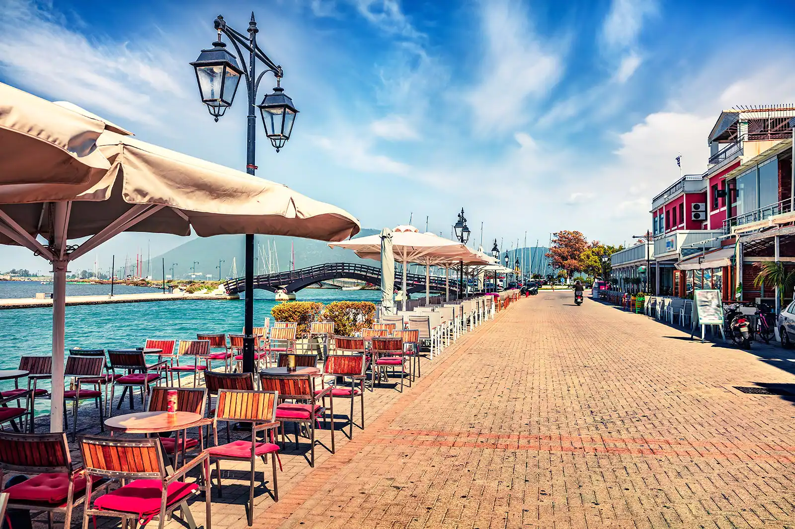
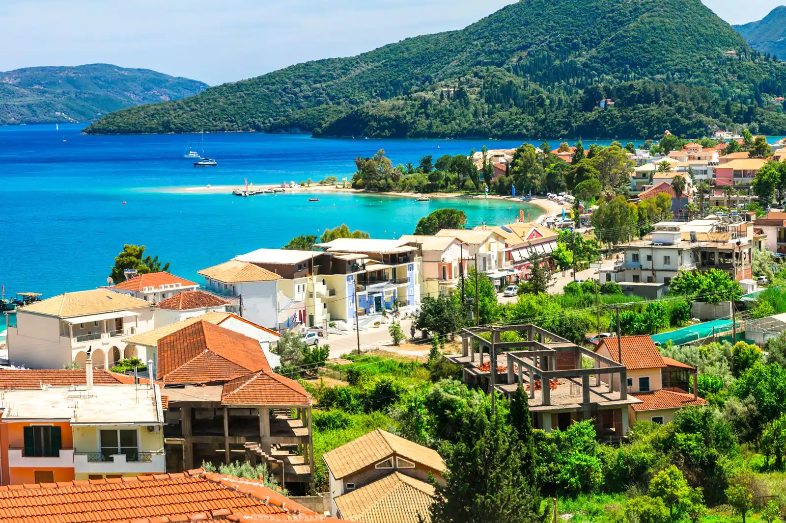
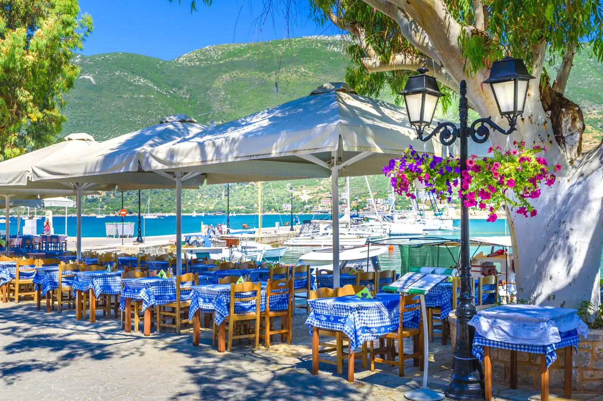
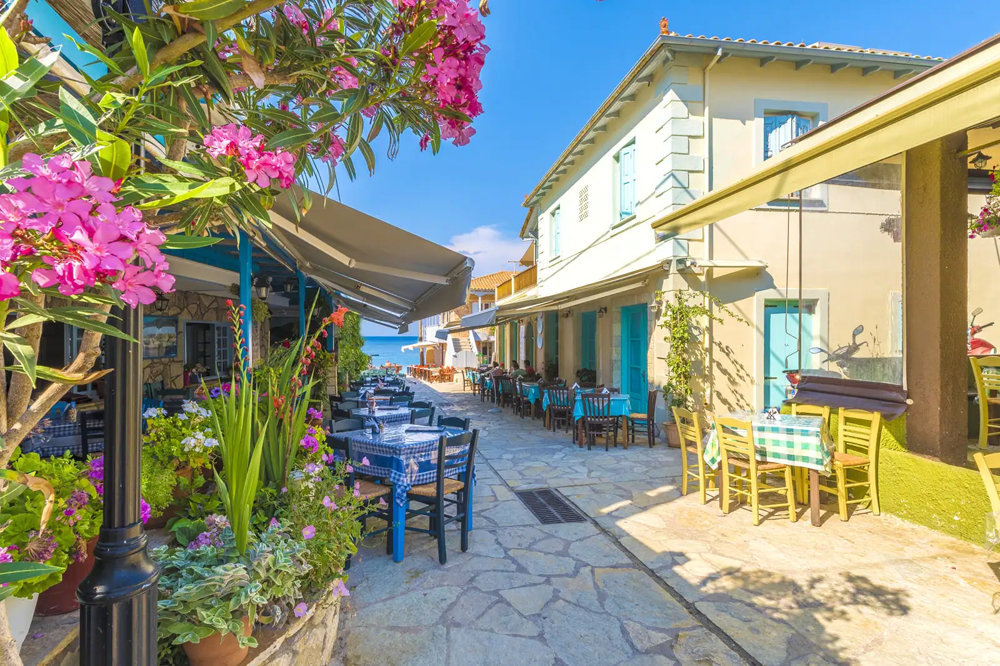

Остров Лефкада - Гърция
Остров Лефкада е четвърти по големина в групата на Йонийските острови в Гърция. Столица на острова е град Лефкада. Площта на осторва е 303 кв.км. Най-високата му точка е Ставрота (1158 м.). Населението на острова се занимава основно със земеделие (производство на зехтин и вино), животновъдство и туризъм.
Това, което го отличава от другите острови е планинския терен и вечнозелената растителност. Част от по-известните плажове са Порто Кацики, Егремни и Катизма. Островът е лесно достъпен с асфалтов път, като не се налага ползването на ферибот.
Географско положение
Левкада или Лефкада (на гръцки: Λευκάδα, катаревуса: Λευκάς, Левкас) е гръцки остров в Йонийско море с площ 333,6 km².
Дължина от север на юг 33 km, ширина до 14 km. От континента островът е отделен с тесен (минимална ширина 50 m) проток на североизток и залива Орепана на изток.
Югоизточно от него са разположени по-малките острови Меганиси, Каламос, Кастос, Аркоуди и Атокос, а на 9 km южно се намира остров Итака.
Островът разполага с няколко средно големи курорта по източното крайбрежие и голям брой отделни плажове, най-известни от които са Порто Кацики, Егремни и Нидри. Към настоящия момент плажът на Егремни е достъпен единствено по вода. Непосредствено до градчето Нидри се намират островите Спарти, Скорпиос и Меганиси. О-в Меганиси е достъпен както с ферибот, така и с обикновена лодка.
Селища в Лефкада
| # | Селище | Население | Карта |
|---|---|---|---|
|  | Лефкада (град) | 9364 души | |
|  | Нидри | 1218 души | |
|  | Василики | 1439 души | |
|  | Агиос Никитас | 108 души |